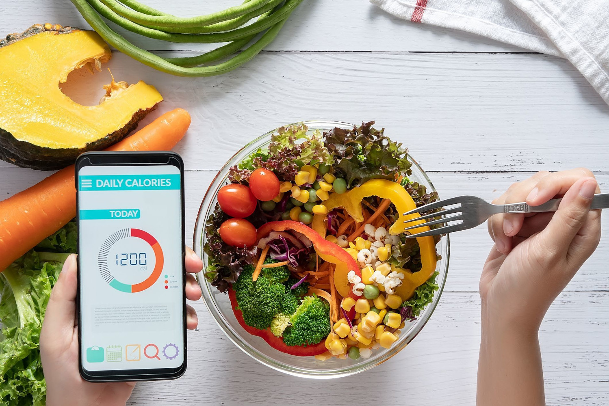

Início
O FitTrack Proé um produto revolucionário desenvolvido para ajudar as pessoas a alcançarem seus objetivos de alimentação saudável e perda de peso de forma eficaz. Ele é um dispositivo portátil inteligente, combinado com um aplicativo móvel, que atua como um parceiro pessoal de nutrição.
Função principal:
A principal função do FitTrack Pro é fornecer orientação e apoio personalizados para o público-alvo, ajudando-os a adotar hábitos alimentares saudáveis e atingir seus objetivos de perda de peso. Ele resolve o problema comum de falta de conhecimento sobre nutrição adequada e dificuldade em manter um estilo de vida saudável em meio a uma rotina agitada.
Recursos e benefícios:
Avaliação personalizada: O FitTrack Proinicia sua jornada realizando uma avaliação completa do perfil do usuário, incluindo idade, peso, altura, preferências alimentares e restrições dietéticas. Com base nessas informações, o dispositivo cria um plano nutricional personalizado.
Rastreamento inteligente de alimentos:
O dispositivo possui um scanner embutido que permite aos usuários escanear códigos de barras dos alimentos consumidos. Ele identifica automaticamente os nutrientes e as calorias, fornecendo informações em tempo real sobre o valor nutricional de cada alimento.
Lembretes e dicas:
O FitTrack Pro envia lembretes e dicas personalizadas ao longo do dia para incentivar escolhas alimentares saudáveis. Ele lembra os usuários de beber água, fazer refeições equilibradas e oferece sugestões de receitas saudáveis.
O dispositivo também possui um acelerômetro embutido que rastreia a atividade física do usuário. Ele registra passos, distância percorrida e calorias queimadas, integrando-se ao aplicativo móvel para fornecer um panorama completo da saúde e do progresso.
Comunidade e suporte:
O aplicativo móvel do FitTrack Pro oferece acesso a uma comunidade ativa de usuários que compartilham experiências, dicas e apoio mútuo. Além disso, os usuários têm a opção de se conectar com nutricionistas e treinadores pessoais certificados para obter orientações adicionais.
Benefícios adicionais:
Ajuda os usuários a manterem-se motivados e engajados em sua jornada de saúde. Fornece um sistema de recompensas para alcançar metas e atingir marcos. Acompanha o progresso a longo prazo, fornecendo relatórios e análises detalhados. O FitTrack Pro é o aliado perfeito para aqueles que desejam melhorar sua saúde, perder peso e adotar um estilo de vida mais saudável. Com sua abordagem personalizada, rastreamento inteligente e apoio contínuo, ele capacita os usuários a tomar decisões informadas sobre nutrição e alcançar seus objetivos de bem-estar.